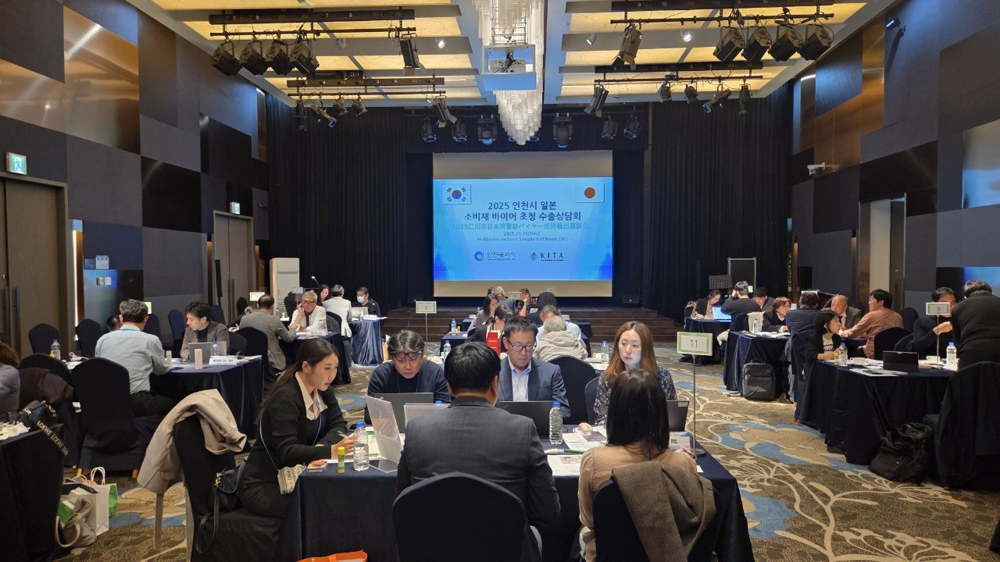
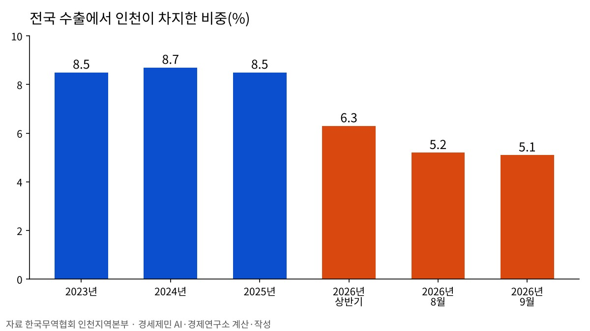

누적 수출 9000억 달러 첫 돌파…인천 비중은 5.1%로 낮아져
10월 수출 1153억 달러, 반도체가 절반
9월 전국 수출 83.7% 늘 때 인천은 14.2%
인천 무역수지 8·9월 적자
AI경제저널=김갑봉 기자 | 산업통상부(장관 김정관)는 10월 수출이 1152억8000만 달러로 1년 전보다 93.7% 늘었다고 지난 1일 밝혔다. 1~10월 누적 수출은 9300억 달러로 처음 9000억 달러를 넘었다.
인천 수출 증가율은 전국보다 낮았다. 한국무역협회 인천지역본부 집계에서 9월 인천 수출은 14.2% 늘었고, 전국 수출은 83.7% 늘었다. 전국 수출에서 인천이 차지한 몫은 5.1%로 1년 전 8.2%보다 낮아졌다.
10월 무역수지 425억 달러 흑자
10월 수입은 727억8000만 달러로 36.0% 늘었다. 무역수지는 425억 달러 흑자로, 두 달 연속 400억 달러를 넘었다.
10월 수출은 9월(1211억 달러)에 이어 두 달 연속 1100억 달러를 웃돌았다. 산업통상부는 연간 수출 1조 달러까지 700억 달러가 남아 11월 중 달성이 확실시된다고 밝혔다.
반도체 564억 달러, 전체 수출의 절반
10월 반도체 수출은 564억4000만 달러로 259.4% 늘었다. 전체 수출의 49%가 반도체다(연구소 계산). 반도체를 뺀 품목 수출은 34% 늘었다.
지난해 10월 수출은 595억 달러였다. 산업통상부는 자동차 등의 수출 증가 요인으로 추석 연휴 이동에 따른 조업일수 증가를 들었다. 추석 연휴는 지난해 10월, 올해는 9월이었다.
조업일수를 고려한 하루 평균 수출은 52억4000만 달러로 76% 늘었다. 전체 증가율 93.7%보다 낮다.
석유제품은 69억2000만 달러로 80.0%, 석유화학은 40억 달러로 27.5% 늘었다. 같은 달 수출 물량은 석유제품이 7.5%, 석유화학이 6.8% 줄었다.
산업통상부는 국제유가가 높은 수준을 유지해 금액이 크게 늘었다고 설명했다. 두바이유는 배럴당 110.7달러로 70.4% 올랐다.
9월 인천 수출 14.2%, 전국은 83.7%

무역협회 인천지역본부가 2일 낸 집계를 보면 9월 인천 수출은 61억7000만 달러다. 1년 전 54억 달러보다 14.2% 늘었다. 같은 달 전국 수출은 659억 달러에서 1210억5000만 달러로 83.7% 늘었다.
8월에는 전국 수출이 68.7%, 인천 수출이 11.6% 늘었다. 올해 상반기 증가율은 전국 48.3%, 인천 5.9%다.
인천본부세관 집계에서 9월 인천 수출은 일곱 달 연속 늘었다. 품목별로는 전기·전자제품이 53.6% 늘었다. 기계류·정밀기기는 20.7%, 화공품은 11.6%, 수송장비는 11.5% 줄었다.
나라별로는 미국이 68.1%, 베트남이 60.9%, 중국이 26.1% 늘었다. 독립국가연합은 59.3%, 중남미는 43.3%, 유럽연합은 17.5% 줄었다.

인천 수출 비중 8%대에서 5%대로
전국 수출에서 인천이 차지한 몫은 2023년 8.5%, 2024년 8.7%, 2025년 8.5%였다. 올해 상반기 6.3%로 낮아졌고 8월 5.2%, 9월 5.1%로 더 내려갔다(연구소 계산).
인천 수출액이 준 것은 아니다. 2025년 인천 수출은 601억 달러로 2023년보다 63억 달러 많았다. 올해 상반기도 5.9% 늘었다. 전국 수출이 더 빠르게 늘면서 인천 비중이 낮아졌다.
지역 성장률에서도 차이가 난다. 국가데이터처가 집계한 올해 1분기 실질 지역내총생산 성장률은 전국 3.8%, 인천 1.6%다. 경기는 6.2%, 충북은 13.8% 성장했다.
광업·제조업이 성장률을 끌어올린 폭은 충북 11.2%포인트, 경기 5.3%포인트, 인천 0.7%포인트다. 인천 2분기 광공업 생산은 2.5% 늘었고 의약품이 23.2%, 반도체·전자부품이 5.1% 늘었다.
수입 42% 늘어 무역수지 적자
9월 인천 수입은 65억1000만 달러로 42.0% 늘었다. 무역수지는 3억5000만 달러 적자다. 1년 전 9월에는 8억2000만 달러 흑자였다.
8월 무역수지도 7억6000만 달러 적자였다. 1년 전 8월에는 1000만 달러 적자였고, 올해 상반기에는 6억6000만 달러 흑자였다.
인천본부세관 집계에서 9월 수입은 전기·전자제품이 97.1%, 광물이 35.6%, 연료가 23.0% 늘었다. 나라별로는 일본이 172.7%, 호주가 115.7%, 타이완이 84.7% 늘었고 중동은 86.8% 줄었다.
김정관 장관은 많은 중소·중견기업이 자국 우선주의와 공급망 재편, 중동 정세 불안으로 어려움을 겪고 있다고 밝혔다. 김 장관은 "중소·중견기업까지 수출 성장의 성과를 폭넓게 누릴 수 있도록 모든 정책적 역량을 집중하겠다"고 말했다.
참고문헌
- "2026년 10월 수출입 동향", 산업통상부, 2026.11.1., https://eiec.kdi.re.kr/policy/materialView.do?num=288880
- "2026년 9월 인천 수출입 동향", 한국무역협회 인천지역본부, 2026.11.2., https://domestic.kita.net/ic/tradeTrend/tradeTrend/tradeTrendDetail.do?postIndex=1874382
- "2026년 8월 인천 수출입 동향", 한국무역협회 인천지역본부, 2026.9.21., https://domestic.kita.net/ic/tradeTrend/tradeTrend/tradeTrendDetail.do?postIndex=1873301
- "2026년 상반기 및 6월 수출입동향", 한국무역협회 인천지역본부, 2026.8.6., https://domestic.kita.net/ic/tradeTrend/tradeTrend/tradeTrendDetail.do?postIndex=1872061
- "2025년 연간 인천 수출입 동향", 한국무역협회 인천지역본부, 2026.2.3., https://domestic.kita.net/ic/tradeTrend/tradeTrend/tradeTrendDetail.do?postIndex=1866349
- "(261015) 2026년 9월 인천지역 수출입 현황", 인천본부세관, 2026.10.16., https://www.customs.go.kr/incheon/na/ntt/selectNttList.do?mi=3646&bbsId=1502 (보도자료 게시판)
- "2026년 2/4분기 지역경제동향", 국가데이터처, 2026.8.19., https://eiec.kdi.re.kr/policy/materialView.do?num=285532
- "인천시,'2025 일본 바이어 초청 수출상담회'성황리 개최", 인천시, 2025.10.31., https://www.incheon.go.kr/IC010205/view?repSeq=DOM_0000000013423911
[사진 출처]
- [사진1] 인천광역시, 「인천시,‘2025 일본 바이어 초청 수출상담회’성황리 개최」 보도자료 첨부 사진, 2025.10.31., 공공누리 출처표시, https://www.incheon.go.kr/IC010205/view?repSeq=DOM_0000000013423911
관련기사
- 인천신용보증재단, 소상공인 495억원 협약보증 2일부터 접수
- 인천시·필라델피아, 바이오·교육·문화 교류 확대 논의
- 인천 택시 4606대, 2028 G20 정상회의 유치 홍보 나선다
- 인천시, 강화·옹진 섬 식수 공급 개선 토론회 열어
저작권자 © AI경제저널 무단전재 및 재배포, AI학습 및 활용 금지